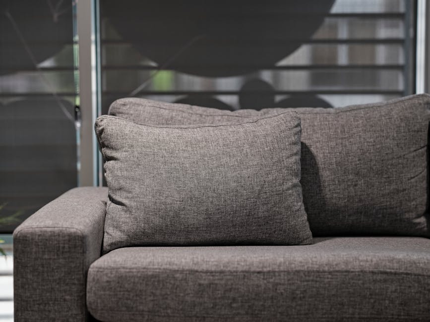

Professional Cleaning Services
Discover the specialized treatments designed to remove deep-seated dirt, allergens, and stubborn stains from your home's most important surfaces.

Deep Carpet Cleaning
Our advanced steam cleaning method penetrates deep into the fibers to extract dirt, dust mites, and allergens, leaving your carpet fresh and revitalized.

Upholstery Cleaning
Restore the beauty and comfort of your furniture. We safely and effectively clean sofas, chairs, and other upholstered items, targeting embedded grime and odors.

Rug Care & Stain Removal
Delicate area rugs require specialized attention. We provide thorough rug cleaning and precision stain removal to protect your investments and keep them looking pristine.